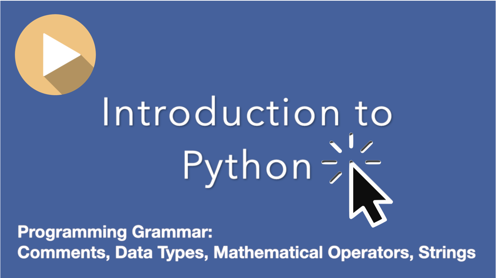
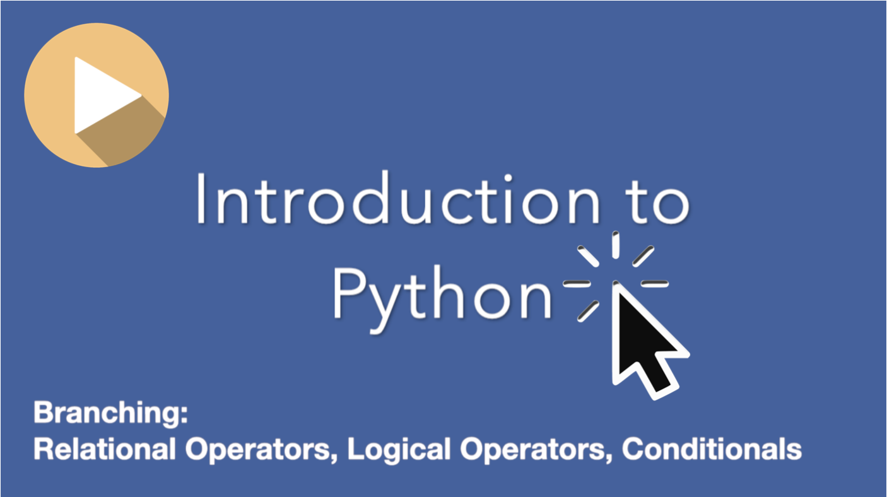

Accessible Video for Python: Grammar (1hr21min)
Python: Grammar Learning Goals
- Understand and identify different data types (string, integer, float).
- Assign data to variables.
- Use the print function.
- Understand and use string concatenation and string interpolation.
- Identify and debug simple syntax errors.
Accessible Video for Python: Branching (57min)
Python: Branching Learning Goals
- Understand and use relational operators.
- Understand and be able to use conditional statements.
- Understand the control flow of a program.
- Identify and debug simple logic errors.
Accessible Video for Python: Iterators (48min)
Python: Iterators Learning Goals
- Define Terms.
- Explain the purpose of iteration in creating programs.
- Write loops in order to prevent code duplication and repetition.
- Understand how a loop will execute the statements inside and what the resulting output will be.
- Debug code with loops.
Introduction to Python
Python is a high-level coding language. Let's Learn Python.
A great way to learn Python is to practice!
Be sure to complete courses like these ones, "Ada Build - Intro to Python" that help you get comfortable using your Python skills.
Terminal is a Software Application!
Accessible Video for Learning Terminal (46min)

Introduction to Terminal
The terminal is the software application we use to interact with the console. Terminal is a command language interpreter - so it can interpret text commands (inputs) into various computer operations (outputs). The terminal is the place where we type texts (or commands) in our command line. The terminal is the place where we can talk directly to our computer with texts. Let's Learn Terminal.
A great way to learn Terminal is to practice!
Be sure to complete courses like "Learn the Command Line" that help you get comfortable using Terminal to navigate your computer.
Terminal: Learning Goals
- Learn Terminology
- Learn the advantages of the command line
- Learn and utilize basic terminal commands
- Utilize the terminal to navigate, create, delete and modify files and folders
About Neurodiversity
WHAT we do is just as important as HOW we accomplish it. Every person brings valuable insights and approaches to projects and problem-solving. Neurodiversity is a competitive advantage for companies and organizations, especially in tech. HOW you learn - can enhance your capacity to see and solve problems in ways that might-not come as easily to others. People with learning differences often adjust to cope with academic structures that are-not designed with disability in mind. The problem-solving skills people develop through managing unique learning styles can be advantageous to your career. Keep going!